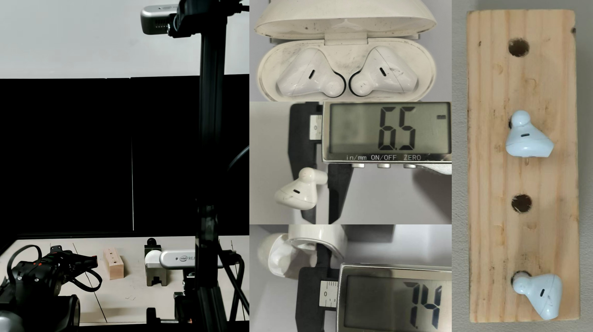
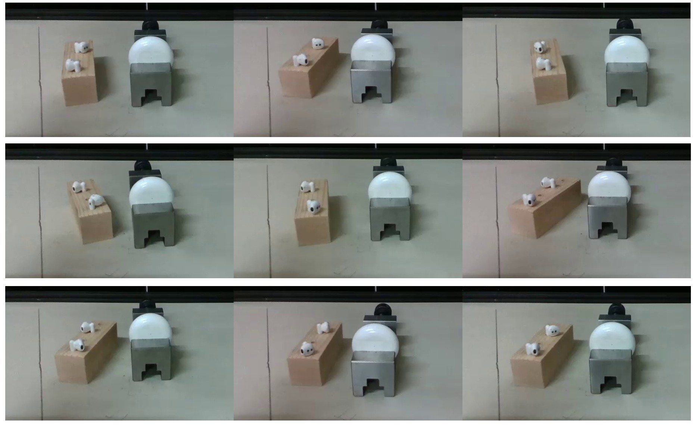
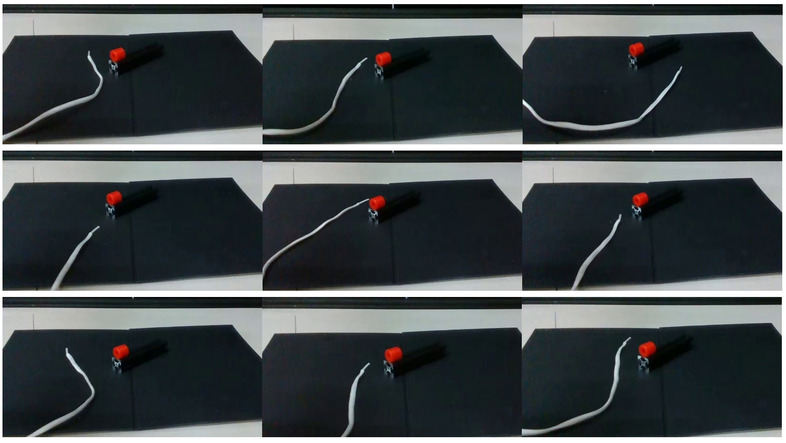

Action-Driven World Modeling: Eliciting Latent Dynamics in VLA via Next-Chunk Prediction
Real-World Continuous Testing: 30-Minute Earphone Assembly
Earphone Assembly Task
Shoelace Threading Task
Robot-Camera View (Including Recovery from Suboptimal States)
Robot-Camera View (Failure Cases)

Our system utilizes a Piper robotic arm and two RealSense D435 cameras positioned in a third-person perspective.

Randomization of Object Initial Poses in Real-World Experiments.

Randomization of Object Initial Poses in Real-World Experiments.
Abstract
Endowing Vision-Language-Action (VLA) models with world-modeling capabilities represents a critical evolution from reactive policies to proactive agents. However, current methods secure these capabilities at the cost of explicit future-observation supervision, often requiring intricate auxiliary losses or multi-stage training. In this work, we pursue a simple alternative and ask whether world modeling can emerge in a VLA from the action signal alone. Inspired by the next-token prediction paradigm in large language models, we propose Action-Driven World Modeling (ADWM), which elicits latent dynamics through a single objective: next action chunk prediction. At its core, ADWM employs a cascaded inference mechanism via a shared world-action head. The initial forward pass jointly predicts the current action chunk and the future latent state; this latent state subsequently conditions the second pass to forecast the next action chunk. The cascaded next chunk prediction implicitly ensures an action-relevant, non-degenerate latent space, eliminating the need for explicit observation supervision or anti-collapse regularizers. Designed with architectural simplicity, ADWM functions as a plug-and-play module that integrates seamlessly into existing frameworks, requiring only a single balancing coefficient. More importantly, by obviating explicit future-state supervision, our design reduces computational overhead compared to existing methods. Extensive experiments in both the RoboTwin2.0 simulation environment and real-world deployments demonstrate the efficacy of our method. Crucially, on millimeter-precision tasks like earphone assembly and shoelace threading, ADWM outperforms standard VLAs by 14\% and 24\%, respectively.